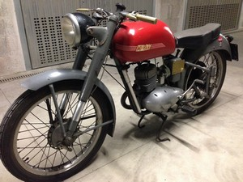
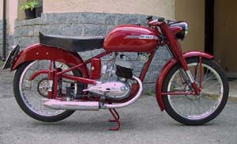
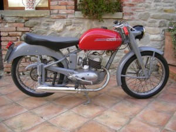

MODELLO 125 NS
|
Cliccare sulle immagini per ingrandirle |
|
|
SCHEDA
TECNICA
MOTORE: Monocilindrico 2 tempi, alesaggio e corsa 52 x 58 mm Cilindrata effettiva 123 cc, potenza effettiva 5,5 CV a 5200 giri, rapporto di compressione 1÷7 Velocità massima 95 km/h Carburatore Dell'Orto UB 20 S Accensione a volano magnete Cambio a 4 rapporti, trasmissione primaria e secondaria a catena Frizione in bagno d'olio a dischi multipli TELAIO A culla singola Forcella anteriore telescopica teleidraulica Sospensione posteriore a ruota guidata Cerchio anteriore: 2" x 19" Cerchio posteriore: 2" x 19" (N.B. La larghezza interna del canale è 1.5") Capacità serbatoio 12 litri Potenza impianto elettrico 28 W Consumo norme CUNA 2,38 litri/100 km Candela Marelli CW 225 AT |
L'angolo dei conservati  Esemplari restaurati   |